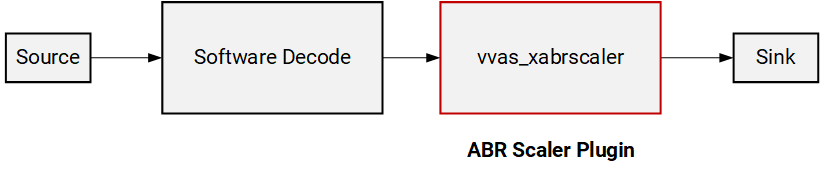
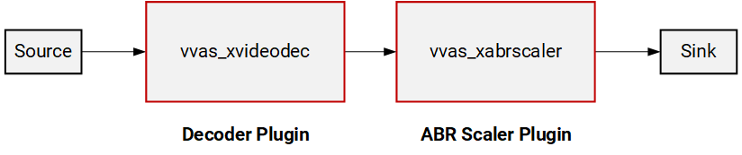
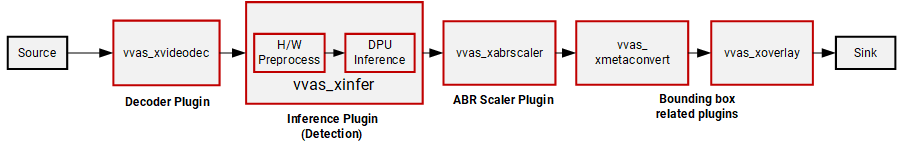
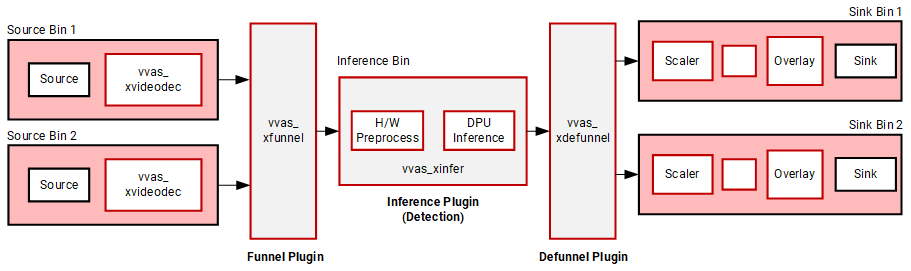
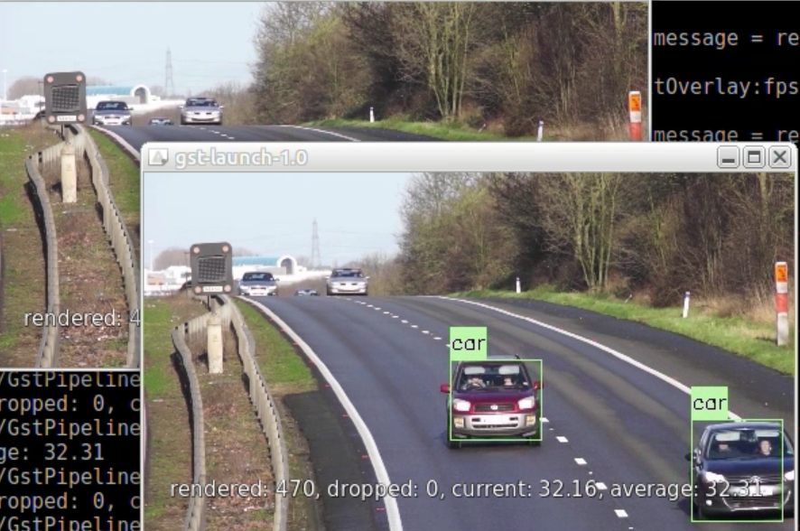
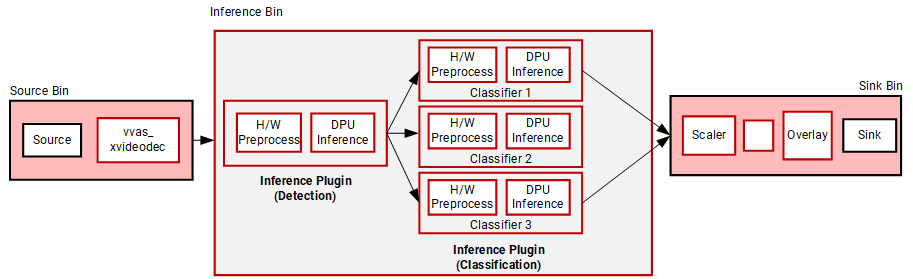
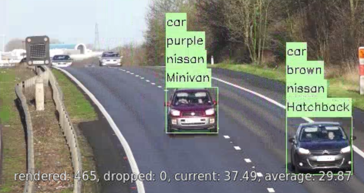
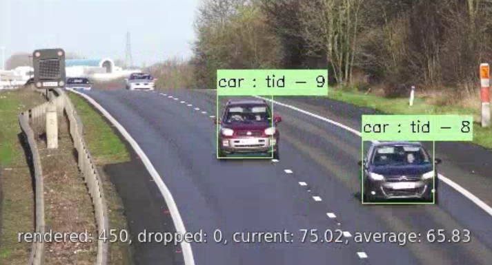

Quickstart Tutorial¶
This tutorial introduces the VVAS Core Plugins deployable on the V70 Platform. The goal of this tutorial is to familiarize you with the foundational plugins, and their properties quickly, even without writing any code. So we will demonstrate the usage of the plugins with the GStreamer command line.
The tutorial starts with a very simple video streaming pipeline without any V70-specific plugin. Then the tutorial demonstrates adding V70-specific plugins to take the advantage of the acceleration provided by the V70 platform.
By the end of this tutorial, you will have a comprehensive idea of the core plugins offered in V70 platforms and how to use them. You then can integrate these core plugins into your application’s business logic either by native GStreamer APIs or VVAS Core APIs.
The core plugins demonstrated in this tutorial are as below
Note
This tutorial assumes you have already followed the Installation Guide page and prepared the docker container to build and run the V70 video analytics application.
All scripts and JSON configuration files of this tutorial can be downloaded from here
Preparing the sample video file for this tutorial¶
Download a free video from https://pixabay.com/videos/cars-motorway-speed-motion-traffic-1900/ in 1920x1080 format.
Convert the mp4 video file to h264 file using the below command.
gst-launch-1.0 -v filesrc location=/workspace/cars-1900.mp4 ! \
qtdemux ! h264parse ! video/x-h264,stream-format=byte-stream ! \
filesink location=/workspace/Cars_1900.264
Step 0: Starting with software plugins¶
Let’s start with a very basic GStreamer pipeline demonstarting playing an input video. The pipeline below is utilizing native GStreamer plugins such as decodebin, videoconvert and fpsdisplaysink. Any v70-specific or VVAS plugin is not used.
Run the below command to play the input video.
gst-launch-1.0 -v \
filesrc location=/workspace/Cars_1900.264 ! \
decodebin ! \
identity sync=0 ! \
videoconvert ! \
fpsdisplaysink sync=false
Step 1: Hardware-accelerated Scaling by VVAS ABR Scaler Plugin¶
Now we will modify the pipeline by inserting our first VVAS plugin, vvas_xabrscaler, which enables hardware-accelerated scaling and color space conversion.
The properties required for vvas_xabrscaler plugin are as below
xclbin-location: Location of the XCLBIN, which is
/opt/xilinx/xclbin/v70.xclbin, the path inside the docker container.dev-idx: For a single V70 device,
dev-idx=0. If multiple V70 devices are attached to the host server, thenxbutil examineprovides the list of devices with their increasing index (0, 1, 2, and so on), which should be specified bydev-idx.kernel-name: The hardware accelerator performing the image processing operation. The name can be any of the following strings

image_processing:{image_processing_1}
image_processing:{image_processing_2}
Run the below command to execute the pipeline with vvas_xabrscaler.
gst-launch-1.0 -v \
filesrc location=/workspace/Cars_1900.264 ! \
decodebin ! \
identity sync=0 ! \
videoconvert ! \
vvas_xabrscaler dev-idx=0 xclbin-location=/opt/xilinx/xclbin/v70.xclbin kernel-name=\"image_processing:{image_processing_1}\" ! \
video/x-raw, width=480, height=270, format=NV12 ! \
videoconvert ! \
fpsdisplaysink sync=false
As you see the video playing, it is now scaled down to 480x270 as specified in the pipeline.
Note The plugin videoconvert is inserted between the decodebin and vvas_abrscaler. This is because vvas_abrscaler supports only NV12, RGB and BGR color formats, whereas decodebin is producing I420 format. For more details for VVAS plugin supported formats and capabilities please refer Features and Capabilities
Step 2: Hardware-accelerated Decoding by VVAS video decoder plugin¶
The vvas_xvideodec plugin enables hardware accelerated decoding.
The properties we will be using for vvas_xvideodec plugin are as below
xclbin-location: Location of the XCLBIN, which is
/opt/xilinx/xclbin/v70.xclbininside our docker container.dev-idx: For a single V70 device,
dev-idx=0. If multiple V70 devices are attached to the host server, thenxbutil examineprovides the list of devices with their increasing index (0, 1, 2, and so on), which should be specified bydev-idx.kernel-name: The hardware accelerator performing the decode operation. Specify the kernel-name as
kernel_vdu_decoder:{kernel_vdu_decoder_N}where N is any number in the range 0-15.
instance-id: The valid values are as below

0 (when kernel-name is from
kernel_vdu_decoder:{kernel_vdu_decoder_0}tokernel_vdu_decoder:{kernel_vdu_decoder_7})1 (when kernel-name is from
kernel_vdu_decoder:{kernel_vdu_decoder_8}tokernel_vdu_decoder:{kernel_vdu_decoder_15})
avoid-dynamic-alloc: The property setting
avoid-dynamic-alloc=0instructs the decoder plugin to create the necessary number of output buffers dynamically to propagate decoded video data through the rest of the downstream pipeline. For our tutorial this setting is good enough, for more details how the settingavoid-dynamic-alloc=1setting can be used withadditional-output-bufferproperty see thevvas_xvideodecdocumentation in VVAS GStreamer Plugins page
The complete pipeline now looks like below.
XCLBIN_LOCATION="/opt/xilinx/xclbin/v70.xclbin"
gst-launch-1.0 -v \
filesrc location=/workspace/Cars_1900.264 ! \
h264parse ! \
vvas_xvideodec dev-idx=0 xclbin-location=$XCLBIN_LOCATION kernel-name=\"kernel_vdu_decoder:{kernel_vdu_decoder_0}\" instance-id=0 avoid-dynamic-alloc=0 ! \
identity sync=0 ! \
vvas_xabrscaler dev-idx=0 xclbin-location=$XCLBIN_LOCATION kernel-name=\"image_processing:{image_processing_1}\" ! \
video/x-raw, width=480, height=270, format=NV12 ! \
videoconvert ! \
fpsdisplaysink sync=false
Step 3: Using Inference plugin for Model Inference¶
V70 supports many CNN-based pre-trained deep learning models for prediction. These models are precompiled and can be deployed inside your video analytics pipeline to get meaningful insights of the incoming video streams. The pre-trained models available in Vitis AI Model Zoo VITIS AI Model Zoo are great vehicles to get started with your video analytics workflow. The plugin vvas_xinfer is required to deploy these models.
The plugin vvas_xinfer has the following two properties
preprocess-config: Specifies a JSON configuration file that is used to enable hardware accelerated preprocessing before inference.
infer-config: Specifies a JSON configuration file containing all the properties related to the deep learning model and inference.
You can run the below command line that will deploy the incoming video stream through an object detection model running on the AI engine processor.
XCLBIN_LOCATION="/opt/xilinx/xclbin/v70.xclbin"
gst-launch-1.0 -v \
filesrc location=/workspace/Cars_1900.264 ! \
h264parse ! \
vvas_xvideodec dev-idx=0 xclbin-location=$XCLBIN_LOCATION kernel-name=\"kernel_vdu_decoder:{kernel_vdu_decoder_0}\" instance-id=0 avoid-dynamic-alloc=0 ! \
identity sync=0 ! \
vvas_xinfer preprocess-config=./preprocess.json infer-config=./infer.json name=yolo_0 ! \
vvas_xabrscaler dev-idx=0 xclbin-location=$XCLBIN_LOCATION kernel-name=\"image_processing:{image_processing_1}\" ! \
video/x-raw, width=480, height=270, format=NV12 ! \
videoconvert ! \
fpsdisplaysink sync=false
First, let’s review the content of the preprocess-config JSON file.
{
"xclbin-location":"/opt/xilinx/xclbin/v70.xclbin",
"device-index": 0,
"kernel" :
{
"kernel-name": "image_processing:{image_processing_1}",
"config": {
"ppc" : 4
}
}
}
The preprocess-config JSON file specifies the hardware accelerator for preprocessing the incoming frames.
At the very beginning, we specify the XCLBIN file and device index.
xclbin-location: Location of the XCLBIN, which is
/opt/xilinx/xclbin/v70.xclbininside our docker container.device-index: For a single V70 device,
dev-idx=0. If multiple V70 devices are attached to the host server, thenxbutil examineprovides the list of devices with their increasing index (0, 1, 2, and so on), which should be specified bydev-idx.
The kernel subsection inside the JSON file provides more details of the hardware accelerator
kernel-name: The hardware accelerator for preprocessing the incoming image frames. Specify any of the following strings.
image_processing:{image_processing_1}
image_processing:{image_processing_2}
The keys inside the kernel.config section
ppc: pixel per clock supported by the preprocessing kernel
{
"inference-level": 1,
"attach-ppe-outbuf": false,
"kernel" : {
"config": {
"batch-size":14,
"model-name" : "yolov3_voc_tf",
"model-class" : "YOLOV3",
"model-format" : "BGR",
"model-path" : "/usr/share/vitis_ai_library/models/",
"performance-test" : false,
"vitis-ai-preprocess":false,
"debug-level" : 0,
"max-objects":3,
"filter-labels":["car"]
}
}
}
The JSON keys
inference-level: As we support cascaded inferences, the
inference-levelis used to denote the pipeline stage. Here the object detector is the first model in the pipeline, hence this setting is 1.attach-ppe-outbuf: Preserve preprocessing result to avoid redoing the preprocessing if required.
batch-size: For the V70 platform, the batch size is 14 to utilize all the processing power of the AI engine processor.
model-name, model-class: The model name and the class of the model.
model-format: Image color format required by the model.
model-path: The directory path where compiled model artifacts are stored.
vitis-ai-preprocess: Must set to
falseto invoke hardware accelerated preprocessing.debug-level: The key used to specify the log level
max-objects: The maximum number of objects to be detected per frame
filter-labels: The target label for the prediction of the object detection model.
Getting insights from the plugin by adding debug switch
In the previous run, though we processed the incoming video stream through the AI engine processor that performs “car” object detection, we dont see the prediction result as we have not added any plugin related to the bounding box yet. However, vvas_xinfer supports a verbose mode where we can see the prediction result. To enable this we need to do the following steps:
Set the following environment variable. For more information about logging refer Logging APIs section in API reference page VVAS C API Reference page.
export VVAS_CORE_LOG_FILE_PATH=CONSOLE
Change the
debug-levelswitch to 2
"debug-level" : 2,
Now if you run the above command line you will see more verbose output in the stdout as now the plugin will print all the inference result frame by frame. A sample output snippet as you will see
[vvas_yolov3.cpp run:82] INFO: objects detected 4
[vvas_yolov3.cpp run:158] INFO: RESULT: car(6) 257.010345 209.918701 413.010345 407.918701 (0.996819)
[vvas_yolov3.cpp run:158] INFO: RESULT: car(6) 171.959351 181.505981 201.959351 218.504349 (0.563108)
[vvas_yolov3.cpp run:158] INFO: RESULT: car(6) 137.453629 190.233704 170.453629 219.766296 (0.374302)
The messages above show the number of “car” object detected and the result. Note that though 4 objects are detected only 3 results are printed as we have set "max-objects":3, inside infer-config JSON file. The four numbers in the result line show the location of the object ( top-left x, top-left y, width of the bounding box, and height of the bounding box). The last number is the confidence (probability) score.
Software Preprocessing: In the previous run we used hardware accelerator for preprocessing for better performance. However, the VVAS framework also provide flexibility to choose software preprocessing. The following changes are required to perform inference with software preprocessing
The
vvas_xinfer’s parameterpreprocess-configis no longer neededWe also need to set
vitis-ai-preprocess=trueinside theinfer-configJSON file.
A changed version of the above 3_infer.sh script performing software preprocessing is shown below. Note a changed version of the infer-config JSON file, infer_nopp.json is used with the second change mentioned above
XCLBIN_LOCATION="/opt/xilinx/xclbin/v70.xclbin"
gst-launch-1.0 -v \
filesrc location=/workspace/Cars_1900.264 ! \
h264parse ! \
vvas_xvideodec dev-idx=0 xclbin-location=$XCLBIN_LOCATION kernel-name=\"kernel_vdu_decoder:{kernel_vdu_decoder_0}\" instance-id=0 avoid-dynamic-alloc=0 ! \
identity sync=0 ! \
videoconvert ! \
vvas_xinfer infer-config=./infer_nopp.json name=yolo_0 ! \
vvas_xabrscaler dev-idx=0 xclbin-location=$XCLBIN_LOCATION kernel-name=\"image_processing:{image_processing_1}\" ! \
video/x-raw, width=480, height=270, format=NV12 ! \
videoconvert ! \
fpsdisplaysink sync=false
Step 4: Using Metadata conversion and Overlay Plugins¶
The plugins vvas_xmetaconvert and vvas_xoverlay are used in series to display the inference result on-screen. The functionalities of these two plugins are:
vvas_xmetaconvert: The pluginvvas_xmetaconvertconverts incoming inference result metadata to produce overlay metadata for thevvas_xoverlaypluginvvas_xoverlay: The pluginvvas_xoverlayis used for drawing bounding boxes, text, lines, arrows, circles, and polygons on frames.
XCLBIN_LOCATION="/opt/xilinx/xclbin/v70.xclbin"
gst-launch-1.0 -v \
filesrc location=/workspace/Cars_1900.264 ! \
h264parse ! \
vvas_xvideodec dev-idx=0 xclbin-location=$XCLBIN_LOCATION kernel-name=\"kernel_vdu_decoder:{kernel_vdu_decoder_0}\" instance-id=0 avoid-dynamic-alloc=0 ! \
identity sync=0 ! \
vvas_xinfer preprocess-config=./preprocess.json infer-config=./infer.json name=yolo_0 ! \
vvas_xabrscaler dev-idx=0 xclbin-location=$XCLBIN_LOCATION kernel-name=\"image_processing:{image_processing_1}\" ! \
video/x-raw, width=480, height=270, format=NV12 ! \
vvas_xmetaconvert config-location=metaconvert.json ! \
vvas_xoverlay ! \
videoconvert ! \
fpsdisplaysink sync=false
Plugin vvas_xmetaconvert has the property config-location which is used to specify a JSON file containing configuration parameters. Let’s take a look at this file
{
"config": {
"font-size" : 0.5,
"font" : 0,
"thickness" : 1,
"display-level" : 0,
"label-color" : { "blue" : 0, "green" : 0, "red" : 0 },
"y-offset" : 0,
"label-filter" : [ "class","tracker-id" ],
"classes" : [
{
"name" : "car",
"blue" : 183,
"green" : 255,
"red" : 183
},
{
"name" : "person",
"blue" : 0,
"green" : 255,
"red" : 0
},
{
"name" : "bus",
"blue" : 0,
"green" : 0,
"red" : 255
},
{
"name" : "bicycle",
"blue" : 0,
"green" : 0,
"red" : 255
}
]
}
}
Some of the configurations of the vvas_xmetaconvert plugin:
font,fontsize, andthickness: Bounding box drawing related parameters.display-level: This parameter specifies the particular inference level for which bounding box information is to be displayed. For example,display-level=1indicates to display of the bounding boxes with the inference result obtained from the first inference model. In the above example,display-level=0indicates that all inference level’s bounding box information will be displayed.label-filter: This parameter is used to select the label string(s) to be shown with the bounding boxes. Here we have used “class” and “tracker-id” as the label-filter. Hence in our example, the class name “car” is displayed as a string with the bounding box. We have also used “tracker-id”, which will be displayed also as the label string when we will use the tracker plugin in our pipeline (step 7).classes: The bounding boxes are only drawn for the classes that are listed in this configuration and other classes are ignored. For instance, if “car”, “person”, “bicycle” is entered under “classes”, then the bounding box is only drawn for these three classes, and other classes like horse, motorbike, etc. are ignored. The color combinations to be used to draw the bounding boxes are also specified inside the respective classes. As in our pipeline example object detection model only detects cars, the bounding box will be drawn on the output video frames using the color combination specified inside the “classes” section corresponding to “car”.
Tip: As we are adding more plugins the pipeline becomes complex and the script becomes difficult to read. So it is better to use variables for different stages of the pipeline. Here you can see how we can rewrite the above pipeline command by using three variables for three stages, decode, inference, and display. Let’s consider this script as the final script for this step.
XCLBIN_LOCATION="/opt/xilinx/xclbin/v70.xclbin"
DECODE_PIPE=" h264parse ! \
vvas_xvideodec dev-idx=0 xclbin-location=$XCLBIN_LOCATION kernel-name=\"kernel_vdu_decoder:{kernel_vdu_decoder_0}\" instance-id=0 avoid-dynamic-alloc=0 ! \
identity sync=0 "
INFER_PIPE=" vvas_xinfer preprocess-config=./preprocess.json infer-config=./infer.json name=yolo_0 "
DISPLAY_PIPE=" vvas_xabrscaler dev-idx=0 xclbin-location=$XCLBIN_LOCATION kernel-name=\"image_processing:{image_processing_1}\" ! \
video/x-raw, width=480, height=270, format=NV12 ! \
vvas_xmetaconvert config-location=metaconvert.json ! \
vvas_xoverlay ! \
videoconvert ! \
fpsdisplaysink sync=false "
gst-launch-1.0 -v \
filesrc location=/workspace/Cars_1900.264 ! \
$DECODE_PIPE ! \
$INFER_PIPE ! \
$DISPLAY_PIPE
Step 5: Serving Multiple Streams¶
So far we have only worked with a single video stream. The current version of the V70 platform supports 16 video streams in parallel.
We will now see how to add another video stream in parallel using the vvas_xfunnel and vvas_xdefunnel plugins.
XCLBIN_LOCATION="/opt/xilinx/xclbin/v70.xclbin"
DECODE_PIPE1=" h264parse ! \
vvas_xvideodec dev-idx=0 xclbin-location=$XCLBIN_LOCATION kernel-name=\"kernel_vdu_decoder:{kernel_vdu_decoder_0}\" instance-id=0 avoid-dynamic-alloc=0 ! \
identity sync=0 "
DECODE_PIPE2=" h264parse ! \
vvas_xvideodec dev-idx=0 xclbin-location=$XCLBIN_LOCATION kernel-name=\"kernel_vdu_decoder:{kernel_vdu_decoder_1}\" instance-id=0 avoid-dynamic-alloc=0 ! \
identity sync=0 "
INFER_PIPE=" vvas_xinfer preprocess-config=./preprocess.json infer-config=./infer.json name=yolo_0 "
DISPLAY_PIPE1=" vvas_xabrscaler dev-idx=0 xclbin-location=$XCLBIN_LOCATION kernel-name=\"image_processing:{image_processing_1}\" ! \
video/x-raw, width=480, height=270, format=NV12 ! \
vvas_xmetaconvert config-location=metaconvert.json ! \
vvas_xoverlay ! \
videoconvert ! \
fpsdisplaysink name=perf_0 sync=false video-sink=\"ximagesink async=false\" sync=false "
DISPLAY_PIPE2=" vvas_xabrscaler dev-idx=0 xclbin-location=$XCLBIN_LOCATION kernel-name=\"image_processing:{image_processing_1}\" ! \
video/x-raw, width=480, height=270, format=NV12 ! \
vvas_xmetaconvert config-location=metaconvert.json ! \
vvas_xoverlay ! \
videoconvert ! \
fpsdisplaysink name=perf_1 sync=false video-sink=\"ximagesink async=false\" sync=false "
CMD="vvas_xfunnel name=funnel_in ! $INFER_PIPE ! vvas_xdefunnel name=funnel_out \
funnel_out.src_0 ! $DISPLAY_PIPE1 \
funnel_out.src_1 ! $DISPLAY_PIPE2 \
filesrc location=/workspace/Cars_1900.264 ! $DECODE_PIPE1 ! funnel_in.sink_0 \
filesrc location=/workspace/Cars_1900.264 ! $DECODE_PIPE2 ! funnel_in.sink_1"
echo $CMD
gst-launch-1.0 -v $CMD
Notice the changes in the above pipeline
We still have a single inference pipeline bin denoted by
INFER_PIPE.The input two video streams are decoded by
DECODE_PIPE1andDECODE_PIPE2bins followed by thevvas_xfunnelplugin that serializes the two input streams in a round-robin order.The serialized streams are then deployed for inference (through the
vvas_xinferplugin inside theINFER_PIPEbin).The output from the
vvas_xinferis then deserialized by thevvas_xdefunnelplugin and handled by respective DISPLAY bins,DISPLAY_PIPE1andDISPLAY_PIPE2.
While running the pipeline two video stream will be displayed as below
Step 6: Deploying multiple models¶
The VVAS Framework supports multiple model inferences in cascade.
In this section, you will see how we can run an object detection model followed by three classification models.
We start with the final script of step 4, and just change the Inference bin to add model inference stages.
INFER_PIPE=" vvas_xinfer preprocess-config=./preprocess.json infer-config=./infer.json name=yolo_0 ! \
vvas_xinfer preprocess-config=./preprocess_resnet.json infer-config=./resnet18_vehicle_color.json name=resnet_0_0 ! \
vvas_xinfer preprocess-config=./preprocess_resnet.json infer-config=./resnet18_vehicle_make.json name=resnet_1_0 ! \
vvas_xinfer preprocess-config=./preprocess_resnet.json infer-config=./resnet18_vehicle_type.json name=resnet_2_0 "
The first model detects “car” object as before. However, now the detected objects from the first model are fed to three inference models, each classifying various attributes of the cars, such as the “color” of the car, “make” of the car, and “type” of the car.
We will briefly review the new preprocess_resnet.json file that is used for all three classification models through the preprocess-config property.
{
"xclbin-location": "/opt/xilinx/xclbin/v70.xclbin",
"device-index": 0,
"kernel": {
"kernel-name": "image_processing:{image_processing_1}",
"config": {
"ppc" : 4
}
}
}
As you can inspect, this preprocess-config is same as the preprocess config file used in object detection, as we are picking the same hardware accelerator to do the preprocessing job, and the pixel per clock setting also remains the same.
Let’s review all three infer-config files for three image classification models.
{
"inference-level":2,
"inference-max-queue":14,
"attach-ppe-outbuf": true,
"low-latency":false,
"kernel" : {
"config": {
"model-name" : "chen_color_resnet18_pt",
"model-class" : "CLASSIFICATION",
"model-format" : "BGR",
"batch-size":14,
"model-path" : "/usr/share/vitis_ai_library/models/",
"vitis-ai-preprocess" : false,
"performance-test" : false,
"debug-level" : 0
}
}
}
{
"inference-level":2,
"inference-max-queue":14,
"attach-ppe-outbuf": false,
"low-latency":false,
"kernel" : {
"config": {
"model-name" : "vehicle_make_resnet18_pt",
"model-class" : "VEHICLECLASSIFICATION",
"model-format" : "BGR",
"batch-size":14,
"model-path" : "/usr/share/vitis_ai_library/models/",
"vitis-ai-preprocess" : false,
"performance-test" : false,
"debug-level" : 0
}
}
}
{
"inference-level":2,
"inference-max-queue":14,
"attach-ppe-outbuf": false,
"low-latency":false,
"kernel" : {
"config": {
"model-name" : "vehicle_type_resnet18_pt",
"model-class" : "VEHICLECLASSIFICATION",
"model-format" : "BGR",
"batch-size":14,
"model-path" : "/usr/share/vitis_ai_library/models/",
"vitis-ai-preprocess" : false,
"performance-test" : false,
"debug-level" : 0
}
}
}
The three infer-config files are almost similar with a few differences. Let’s review some of the configuration settings.
All three models and their various attributes are specified in respective
"kernel":"config"sections.Note for every model, the
inference-levelsetting is 2, as all these models are acting as a second model after the first object detection model in the pipeline.Note the
attach-ppe-outbufsetting is true for one of the models but false for the rest of the two models. It is because all three models have the same preprocessing criteria. So instead of preprocessing three times, the pipeline will perform preprocessing only for one model, and skip preprocessing for the rest of the two models.The property
inference-max-queueis set to 14 for each model. This means a maximum of 14 frames will be queued when waiting for the required batch size of 14. If the required batch size is accumulated before 14 frames the batch-size number of objects is sent to the model for classification. If the required batch size is not accumulated before 14 frames of video, then the number of frames only accumulated till the 14th consecutive frames are sent for classification, even if that number is less than the batch size. This technique helps to improve latency when the objects are detected in the long interval (for example the night time when cars are very less on the road).The property
low-latencyis set to false which helps to improve the throughput by capturing the required batch-size number of objects to be detected before sending for classification.
While playing the above command line you will observe detected cars as well as their classifications related information.
Step 7: Using Tracker¶
The VVAS framework supports tracking the detected object. Instead of running object detection in every frame, a tracker can be used to track the detected objects, thus reducing DPU usage which is often compute-intensive. To use a tracker three plugins are used
vvas_xskipframe : The plugin is used to skip the inference of the incoming frames.
vvas_xreorderframe: The plugin is used to rearrange the frames in the correct order after receiving the incoming inferred and skip inferred frames.
vvas_xtracker: The tracker plugin tracks detected objects
A sample script using the tracker plugin is as below
XCLBIN_LOCATION="/opt/xilinx/xclbin/v70.xclbin"
DECODE_PIPE=" h264parse ! \
vvas_xvideodec dev-idx=0 xclbin-location=$XCLBIN_LOCATION kernel-name=\"kernel_vdu_decoder:{kernel_vdu_decoder_0}\" instance-id=0 avoid-output-copy=true avoid-dynamic-alloc=0 ! \
identity sync=0 "
INFER_PIPE=" vvas_xskipframe name=skip_0_0 infer-interval=3 ! \
vvas_xinfer preprocess-config=./preprocess.json infer-config=infer.json name=yolo_0 ! \
vvas_xreorderframe name=reorder_0_0 ! \
vvas_xtracker min-object-width=20 max-object-width=1900 min-object-height=20 max-object-height=1000 match-search-region=1 num-frames-confidence=2 "
DISPLAY_PIPE=" vvas_xabrscaler dev-idx=0 xclbin-location=$XCLBIN_LOCATION kernel-name=\"image_processing:{image_processing_1}\" ! \
video/x-raw, width=480, height=270, format=NV12 ! \
vvas_xmetaconvert config-location=metaconvert.json ! \
vvas_xoverlay ! \
videoconvert ! \
fpsdisplaysink sync=false "
CMD="vvas_xfunnel name=funnel_in ! $INFER_PIPE ! vvas_xdefunnel name=funnel_out \
skip_0_0.src_1 ! \
reorder_0_0.skip_sink funnel_out. ! $DISPLAY_PIPE \
filesrc location=/workspace/Cars_1900.264 ! $DECODE_PIPE ! funnel_in. "
gst-launch-1.0 -v $CMD
Let’s review how the tracker and related plugins are used in the above command
The main change is inside the inference pipeline. Along with the
vvas_xinferthe combination ofvvas_xskipframe,vvas_xreorderframeandvvas_xtrackerplugins are usedThe plugin
vvas_xskipframeis used with the propertyinfer-interval=3, which is used to send one frame in every three frames for running the inference. Two frames out of three frames are used for tracking the detected objects.The plugin
vvas_xreorderframeis used in betweenvvas_xinferandvvas_xtracker. Thevvas_xreorderframetakes both types of frames, the frames which are skipped from the inference, and the frames which are used for inference. The pluginvvas_xreorderframearranges them in the right order before sending them to thevvas_xtrackerplugin.The
vvas_xtrackerplugin uses the following properties
min-object-widthandmin-object-height: Minimum object width and height in pixels to consider for tracking
max-object-widthandmax-object-height: Maximum object width and height in pixels to consider for tracking
max-search-region: In the above command line the tracker is using the the Intersection-Over-Union (IOU) algorithm. This algorithm is used when detector output is available for every frame. Thismax-search-regionspecifies the object search region during detection for IOU-based matching.
num-frames-confidence: Specifies the number of times an object needs to be detected continuously to consider for tracking
When running the above pipeline, notice that the tracker-id is also displayed as the bounding box labels. This is because we have set label-filter parameter to “tracker-id” as well inside the vvas_xmetaconvert plugin’s input JSON file metaconvert.json.
Summary¶
Great!! Now you are at the end of this quickstart tutorial. You should have got a basic understanding of the core VVAS plugins and how they can be connected to build the flexible pipeline. From here you can take the following paths to continue
Review many other GStreamer based plugins and their functionalities in GStreamer Plug-ins page.
The core functionalities of these plugins can also be implemented without using the GStramer framework using VVAS Core APIs. Please review VVAS C API Guide page for more information.